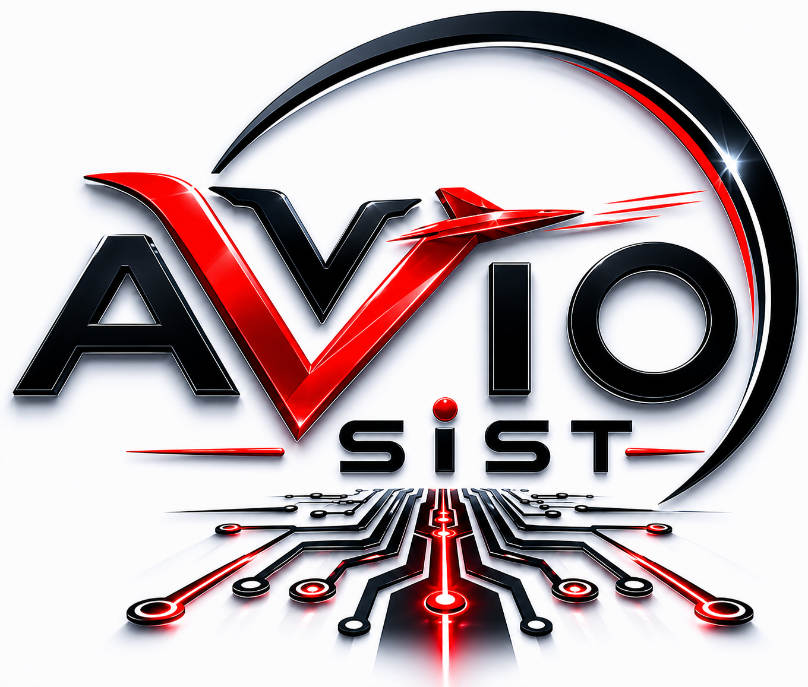

Innovación en el abordaje de sistemas organizacionales
Consultoría Integral · Biomimética
Diseñamos y acompañamos sistemas organizacionales integrales, inspirados en principios de la biomimética
Analizamos la organización y sus sistemas para identificar oportunidades de mejora.
Diseñamos estructuras y procesos inspirados en principios de la biomimética.
Acompañamos la implementación y evolución de las soluciones propuestas.
Comprendemos sistemas, sus dinámicas y sus relaciones para reconocer oportunidades de transformación.
Diseñamos soluciones integrales que responden a las necesidades y posibilidades de cada sistema.
Acompañamos la implementación de los cambios para favorecer una evolución sostenible del sistema organizacional.
Observamos los sistemas como un conjunto de relaciones, estructuras, dinámicas y flujos en constante evolución.
Observamos cómo se vinculan los elementos del sistema, cómo se organiza su estructura y qué lugar ocupa cada parte dentro del conjunto.
Observamos cómo circulan la información, los recursos y las decisiones, y cómo sus dinámicas influyen en el funcionamiento del sistema.
Observamos cómo el entorno y la disposición del espacio influyen en las relaciones, los recorridos y el funcionamiento del sistema.
Nos inspiramos en principios presentes en los sistemas naturales para diseñar soluciones adaptables, eficientes y sostenibles.
cómo está configurado el sistema
cómo se realizan y articulan las actividades.
cómo se vinculan las personas y elementos que forman parte del sistema.
Analizamos el sistema en profundidad para comprender su funcionamiento, reconocer patrones y detectar oportunidades de transformación.
Diseñamos soluciones integrales a partir de lo observado, alineadas con las necesidades, posibilidades y dinámica del sistema.
Acompañamos la implementación de las soluciones y observamos su evolución para realizar los ajustes necesarios a lo largo del proceso.
Integramos distintas experiencias, conocimientos y capacidades para abordar cada sistema desde una perspectiva amplia, conectando diferentes miradas para encontrar soluciones integrales.
Aporta conocimiento de estructuras y Normas ISO, llevado a una mirada sistémica.
Aporta logística y tecnología aplicada a soluciones sistémicas.
Aporta pedagogía y tecnología relacionadas con el desarrollo de sistemas.
Aporta psicoanálisis técnico aplicado al desarrollo de sistemas.
Desarrollamos cursos y contenidos de formación vinculados a nuestros enfoques y herramientas para el abordaje de sistemas.
Los cursos pueden realizarse de manera independiente.
Podemos comenzar por comprender dónde está hoy tu sistema y qué posibilidades de transformación existen.
Ayelén Valarín Rojas
+54 9 3413041747
📞 Llamar
·
WhatsApp
Agustín Daniel Geary
+54 9 341 242 3105
📞 Llamar
·
WhatsApp
Gabriela M. de M. Moreno
+54 9 341 639 3634
📞 Llamar
·
WhatsApp
Mónica G. Azugna
+54 9 341 563 4486
📞 Llamar
·
WhatsApp
Saludos cordiales.
Grupo Avvio.